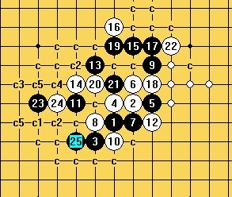

斜月一打 一个白16的变化，求黑怎么杀？
#1 斜月一打 一个白16的变化，求黑怎么杀？ 作者：陨落之城 发表时间：2009-4-18 1:40:48
=======上图对应的爱五子棋谱代码如下，以便你拆解：========
h8i9g7h9j9i10i8g8j11h7f9j8g11f10i12h13k10l11j12h12k11h11h10
======================================================
不知道我的思路对了没有？
#2 Re:斜月一打 一个白16的变化，求黑怎么杀？ 作者：侯军学棋 发表时间：2009-4-18 2:55:31
=======上图对应的爱五子棋谱代码如下，以便你拆解：========
h8i9g7h9j9i10i8g8j11h7f9j8g11f10i12h13j12j10h12g10h10k12d9g9d10d12e11f12c9
======================================================z这样可以杀
［ 陨落之城 于 2009-6-10 11:54:58 时花20金币送鲜花一朵］
#3 Re:斜月一打 一个白16的变化，求黑怎么杀？ 作者：侯军学棋 发表时间：2009-4-18 2:58:09
=======上图对应的爱五子棋谱代码如下，以便你拆解：========
h8i9g7h9j9i10i8g8j11h7f9j8g11f10i12h13k11h11h10
======================================================这样也可以杀

#4 Re:斜月一打 一个白16的变化，求黑怎么杀？ 作者：屏蔽 发表时间：2009-4-18 8:23:13
2楼的17还比较常见，一般不是在局部杀掉的。#5 Re:斜月一打 一个白16的变化，求黑怎么杀？ 作者：忧郁的双眼 发表时间：2009-4-19 16:30:46
=======上图对应的爱五子棋谱代码如下，以便你拆解：========
h8i9g7h9j9i10i8g8j11h7f9j8g11f10i12h13k10l11j12h12i11h11h10k13f8g9e6f6d7
======================================================
就你的这个20我这样下
你拆看能杀不
=======上图对应的爱五子棋谱代码如下，以便你拆解：========
h8i9g7h9j9i10i8g8j11h7f9j8g11f10i12h13k10l11j12h12i11h11h10k13j13j10f8g9e6
======================================================
［此帖子已被 忧郁的双眼 在 2009-4-19 16:31:39 编辑过］
#6 Re:斜月一打 一个白16的变化，求黑怎么杀？ 作者：陨落之城 发表时间：2009-6-9 13:31:12
=======上图对应的爱五子棋谱代码如下，以便你拆解：========
h8i9g7h9j9i10i8g8j11h7f9j8g11f10i12h13j12j10h12g10h10k12d9d10
======================================================
=======上图对应的爱五子棋谱代码如下，以便你拆解：========
h8i9g7h9j9i10i8g8j11h7f9j8g11f10i12h13j12j10h12g10h10k12d9e9
======================================================
两个24希望有高手可以解决一下。
#7 Re:斜月一打 一个白16的变化，求黑怎么杀？ 作者：wrwak 发表时间：2009-6-9 13:33:21
等人发此16地毯馅饼。#8 Re:斜月一打 一个白16的变化，求黑怎么杀？ 作者：陨落之城 发表时间：2009-6-9 13:49:49
LS的能稍微提供点思路吗？#9 Re:斜月一打 一个白16的变化，求黑怎么杀？ 作者：蝶舞红枫 发表时间：2009-6-9 16:18:59
=======上图对应的爱五子棋谱代码如下，以便你拆解：========
h8i9g7h9j9i10i8g8j11h7f9j8g11f10i12h13j12j10h12g10h10k12d9d10f6
======================================================
=======上图对应的爱五子棋谱代码如下，以便你拆解：========
h8i9g7h9j9i10i8g8j11h7f9j8g11f10i12h13j12j10h12g10h10k12d9e9f7
======================================================
都能地毯……
我要奖励啊，呵呵
［ 陨落之城 于 2009-6-10 11:55:56 时花20金币送鲜花一朵］
#10 Re:斜月一打 一个白16的变化，求黑怎么杀？ 作者：wrwak 发表时间：2009-6-9 19:20:57
=======上图对应的爱五子棋谱代码如下，以便你拆解：========
h8i9g7h9j9i10i8g8j11h7f9j8g11f10i12h13j12j10h12g10h10k12d9c9
======================================================

#11 Re:斜月一打 一个白16的变化，求黑怎么杀？ 作者：忧郁的双眼 发表时间：2009-6-9 19:33:28
楼上的不是我拿来吃饭的家伙吗？
#12 Re:斜月一打 一个白16的变化，求黑怎么杀？ 作者：二十七刀 发表时间：2009-6-9 20:01:09
老是想天上掉馅饼，你发的哪个帖子不是想问人家发棋谱的。
不知道大家注意到没有
#13 Re:斜月一打 一个白16的变化，求黑怎么杀？ 作者：陨落之城 发表时间：2009-6-9 20:11:10
LS的是在质问我吗？
我什么时候问大家要棋谱了？只是我自己技术差，拆不出来
想寻求一下帮助，ShowPost.asp?PageIndex=3&ThreadID=7391这个，我在作出谱后就 直接发上来了。
#14 Re:斜月一打 一个白16的变化，求黑怎么杀？ 作者：陨落之城 发表时间：2009-6-9 20:24:19
=======上图对应的爱五子棋谱代码如下，以便你拆解：========
h8i9g7h9j9i10i8g8j11h7f9j8g11f10i12h13j12j10h12g10h10k12d9c9d10h11f7c10f6
======================================================
=======上图对应的爱五子棋谱代码如下，以便你拆解：========
h8i9g7h9j9i10i8g8j11h7f9j8g11f10i12h13j12j10h12g10h10k12d9c9d10i11d11d12f7e8f5
======================================================
#15 Re:斜月一打 一个白16的变化，求黑怎么杀？ 作者：wrwak 发表时间：2009-6-9 20:47:42
赶紧抄下来
#16 Re:斜月一打 一个白16的变化，求黑怎么杀？ 作者：陨落之城 发表时间：2009-6-10 9:05:34
=======上图对应的爱五子棋谱代码如下，以便你拆解：========
h8i9g7h9j9i10i8g8j11h7f9j8g11f10i12h13j12j10h12g10h10k12d9e9f7f11i11k13k11h11i13h14f8g9f6f5g6e8e6h6d6c6c7e12d13e10e11d10c10e5c9e7c11c8f12g12i14i15c13c12e13
======================================================
#17 Re:斜月一打 一个白16的变化，求黑怎么杀？ 作者：陨落之城 发表时间：2009-6-10 11:51:40

还剩几个26没拆出来。白的交换太多。拆的好累
#18 Re:斜月一打 一个白16的变化，求黑怎么杀？ 作者：蝶舞红枫 发表时间：2009-6-10 20:14:32
=======上图对应的爱五子棋谱代码如下，以便你拆解：========
h8i9g7h9j9i10i8g8j11h7f9j8g11f10i12h13j12j10h12g10h10k12d9e9f7f11i11k13k11h11i13h14g6
======================================================
16L的图……简单杀之
回17楼，右面交换走你标c2的点，能简单杀吧
#19 Re:斜月一打 一个白16的变化，求黑怎么杀？ 作者：陨落之城 发表时间：2009-6-10 20:33:17
哦 我拆拆看。对了。16L的简单杀怎么杀？
#20 Re:斜月一打 一个白16的变化，求黑怎么杀？ 作者：蝶舞红枫 发表时间：2009-6-10 20:42:57
18L的图是16楼的简单杀，一扫就能出来#21 Re:斜月一打 一个白16的变化，求黑怎么杀？ 作者：陨落之城 发表时间：2009-6-10 21:35:48
18L的图明白了。
但你说的那个27
=======上图对应的爱五子棋谱代码如下，以便你拆解：========
h8i9g7h9j9i10i8g8j11h7f9j8g11f10i12h13j12j10h12g10h10k12d9e9f7k10f11k13
======================================================
感觉还是不好杀。
#22 Re:斜月一打 一个白16的变化，求黑怎么杀？ 作者：蝶舞红枫 发表时间：2009-6-10 21:55:42
汗，不是这个27，27 E8#23 Re:斜月一打 一个白16的变化，求黑怎么杀？ 作者：陨落之城 发表时间：2009-6-10 22:00:09
=======上图对应的爱五子棋谱代码如下，以便你拆解：========
h8i9g7h9j9i10i8g8j11h7f9j8g11f10i12h13j12j10h12g10h10k12d9e9f7k10g9
======================================================
额 刚拆了下，这个27也可以。
#24 Re:斜月一打 一个白16的变化，求黑怎么杀？ 作者：蝶舞红枫 发表时间：2009-6-10 22:10:17
恩，别的应该没什么了吧
这个总比那个斜一传说中的29好拆多了
#25 Re:斜月一打 一个白16的变化，求黑怎么杀？ 作者：wrwak 发表时间：2009-6-11 8:26:07
棋子越多越拖软件，楼上拆不出怪谁。#26 Re:斜月一打 一个白16的变化，求黑怎么杀？ 作者：笑雨辰 发表时间：2009-10-31 4:32:34
会了。。。
删了